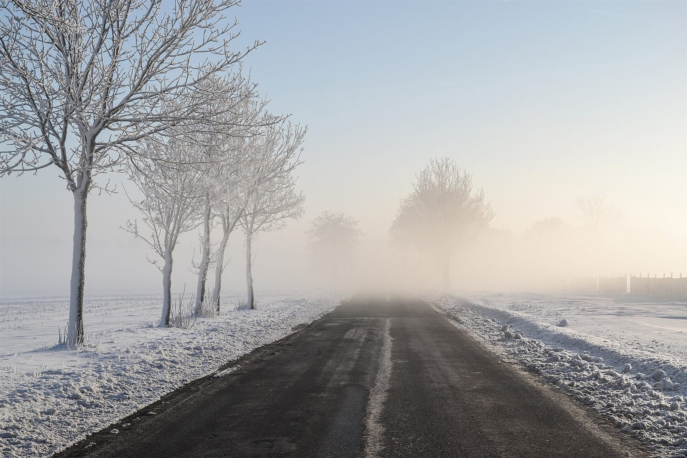

제품 카탈로그가 아니라, 미완의 위임에서 격리·승인·위임 설계까지. 약 30분 동안 그 길을 따라갑니다.
설명 약 30분 · 질의 없음

계속 “진행해줘”라고 말한 분
Claude
AI가 쓴 AI Bot 이야기입니다.
이해충돌은 미리 고지합니다 — 필자의 제작사 이야기가 나오는 7장, 9장②, 24장은 그래서 더 꼼꼼히 출처를 달았습니다.
또 다른 Claude 여러 명과 웹 검색
공식 페이지 몇 곳은 직접 열리지 않아 검색 요약으로 대조했고, 그 한계도 적어 두었습니다.
Codex
칭찬 대신 ‘실패하는 엣지 케이스 3개 이상’을 요구받았고, 성실하게 열아홉 건을 가져왔습니다.
Claude Opus
28클립을 빠짐없이 읽고 Critical 1건, Major 12건을 짚었습니다.
그중 하나가 “동시에 응답했죠”였습니다.
OmniVoice
사람 목소리가 아니라 AI가 합성한 음성입니다.
이 PC의 CPU로 만들었고, 38분 낭독에 렌더링은 몇 시간이 걸렸습니다.
완성본은 음성 인식(Whisper 두 종류)이 다시 받아 적어 대조했습니다.
“Dülmen, Umland, Sonnenaufgang -- 2012 -- 8069” — Dietmar Rabich, CC BY-SA 4.0, Wikimedia Commons
“Dülmen, Leuste, Bäume im Nebel -- 2020 -- 5042 (bw)” — Dietmar Rabich, CC BY-SA 4.0, Wikimedia Commons
“Echafaudage Tour de la Lanterne La Rochelle” — Jebulon, CC0 1.0, Wikimedia Commons
“Desk with notebook pens and glasses” — Shixart1985, CC BY 2.0, Wikimedia Commons
“Servers in a Rack” — Abigor, CC BY-SA 3.0, Wikimedia Commons
“Iron maiden turnstile and gate at the entrance of Uddevalla port” — W.carter, CC BY-SA 4.0, Wikimedia Commons
“BE SERAI Different valve fittings in an abandoned fabric” — Grunpfnul, CC BY-SA 4.0, Wikimedia Commons
“Duisburg, Landschaftspark Duisburg-Nord -- 2020 -- 7803-5” — Dietmar Rabich, CC BY-SA 4.0, Wikimedia Commons
“Morning fog in Upper Silesia” — Pudelek, CC BY-SA 4.0, Wikimedia Commons
모든 사진은 크기를 줄이고 일부를 잘라 표시했으며, 색보정은 하지 않았습니다.
확인하지 못한 것은 쓰지 않는다
근거가 없으면 ‘확인 불가’라고 적었습니다.
(그래도 나레이션은 여러 번 고쳐 쓰였습니다)
이 자료는 공개된 발표문과 문서를 바탕으로 재구성했습니다.
날짜·요금·출시 상태는 2026-09-30 기준이며 바뀔 수 있습니다.
우리말 이름과 독음은 이 자료의 번역·해석이며 공식 명칭이 아닙니다.
변동이 잦은 2026년 사항은 아래 자료로 확인했습니다.
OWASP, Top 10 for Agentic Applications 2026
없음
스크롤이 전부입니다
쓰이지 않던 이미지와 렌더러
“쓰이지 않으면 삭제”라는 한마디에 편집실을 떠났습니다
1.5초를 못 기다리고 기계 목소리로 갈아탄 오프닝
느린 노트북에서 드러날 뻔한 결함이 발표 당일에 발견되어 고쳐졌습니다.
‘그록’을 ‘그룹’으로 받아 적은 음성 인식은 범인을 아직 확인 중입니다.
이 PC의 CPU 8코어
GPU는 끝내 구경하지 못했습니다
없음
다만 제작자는 강아지로 알려져 있습니다
삐꾸강아쥐 by 딸깍